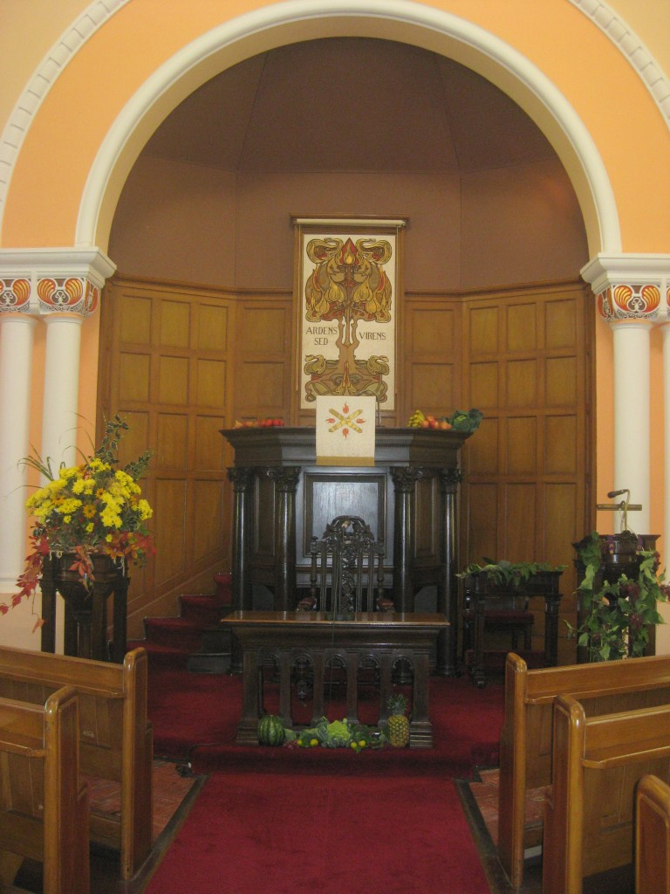

About us
Worship, fellowship and service in Blackrock.
St Andrew’s is a welcoming Presbyterian congregation of all ages, gathered to glorify God and share the love of Christ in our community.
Welcome
A church family for every generation.
Welcome to Saint Andrew’s Presbyterian Church, Blackrock, County Dublin. As a congregation, we exist to glorify God through worship and service. We do this through a wide variety of activities for people of all ages.
We meet every Sunday at 10am for a traditional service of prayer and praise with contemporary Bible-based preaching. During the service, there is a creche and Junior Church for children and young people aged five to fifteen.
Among our activities are a prayer circle, Bible study and discussion groups, church trips, a branch of Presbyterian Women, family fun days and coffee mornings for charity. We participate in ecumenical events run in conjunction with other denominations in the community.
Through these activities, we share our love of Christ and build bonds of fellowship. Come and join us. We would love to welcome you to our fellowship.

Mission statement
Sharing the love of God in our community.
To share the love of God and the gospel of Jesus Christ with the people of Blackrock through worship, fellowship and involvement in the community.
Service times
Sunday 10am · Morning Worship
Location
St Andrew’s is located near Blackrock Village, at the junction of Mount Merrion Avenue and Frascati Park.